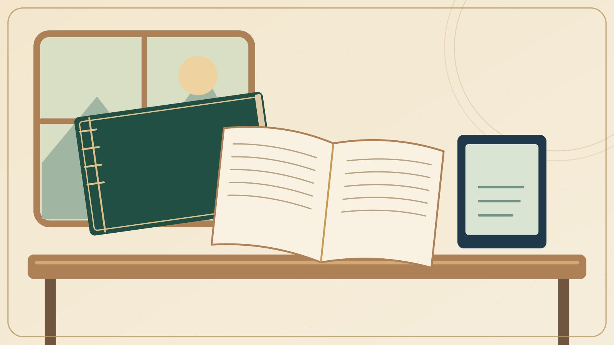

歴史的概念、現代解剖学、サービスの範囲という三つの視点から、異なる知識体系を混同せず経絡を理解します。
異なる知識体系を区別することから始める
経絡の記事を読むときは、古代医学の理論、現代の人体構造、非医療のリラクゼーションサービスのどれを述べているか確認しましょう。語彙が共通していても証拠や用途は同じではありません。経絡は伝統中医学の歴史的理論の一つであり、古典に記載があっても現代解剖学の神経、血管、リンパ構造と同一ではありません。
古典は読む価値があるが操作マニュアルではない
立夫中医薬博物館が紹介する『黄帝内経』は伝統医学の発展を理解する重要文献です。一般の読者は分類方法や時代背景から、人々が身体経験をどう整理したか学べます。目的は文化理解であり、特定位置を探す、古代の操作を真似する、古典の文言で身体状態を判断することではありません。
現代の知識に異なる検証が必要な理由
現代の人体構造の記述には観察可能で再現性のある検証資料が必要です。経絡を臓器や神経の別名とする記事を見たら、比喩、伝統理論、実証的主張のどれか確認しましょう。名称や位置が似ていても同一性の証明にはなりません。不確かな内容は疑問を残し、無理に現代の用語を当てはめなくてよいのです。
民俗調理の言葉はサービス自体に立ち返る
非医療の民俗調理では接触方法、リズム、覆い方、好み、予約の手配を説明できます。台湾衛生福利部の広告注意事項も非医療業者に医療業務を暗示しないよう求めています。当サイトの経絡という言葉は文化的な位置づけを示すもので、病気の判断、医療処置、身体機能の変化の約束には使いません。サービスと文化紹介には明確な境界が必要です。
情報を見分けるための三つの質問
第一に、文章の根拠は歴史文献、研究資料、個人経験のどれか。第二に、効果の主張を資料が支えているか。第三に、文化説明をサービス購入の必須理由にしていないか。答えが不明なら未検証の説明と考えましょう。用語を理解しても付随するすべての結論を受け入れる必要はありません。
ネット上の人体イメージ図に出会ったとき
人体に線を描いた図は古代知識、現代教材、商業イラストかもしれません。名称、制作目的、出典を確認し、精密に見えるだけで診断的意味を認めないでください。一般の日常ケアなら活動、睡眠、サービスの意思疎通など理解しやすい情報を優先できます。特定理論を信じなくても生活の予定の整理に役立ちます。異なる知識の境界を保つことは文化と現代科学の双方を尊重することです。
よくある質問：伝統を尊重するにはすべての説明を受け入れる必要がありますか？
必要ありません。文化理解と事実判断は両立します。古典、東洋の生活美学、手技文化を楽しみながら、身体の問題には信頼できる現代情報を用いることができます。持続する、または異常な不調は経絡用語で自己判断せず、有資格の医療従事者の評価を受けましょう。
参考資料
立夫中医薬博物館｜黄帝内経（文化・歴史的背景）（閲覧：2026-11-27）
衛生福利部｜民俗調理業者の広告掲載時の注意（閲覧：2026-11-27）
本文は一般的な生活・文化情報で、個別の医療助言ではありません。本人による確認待ちです。実際のサービス内容、料金、時間、場所はお問い合わせで確認してください。